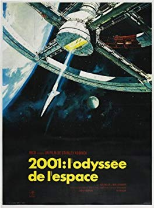

Dans les années 1960, les Etats-Unis, le Royaume-Uni, la France, l'Espagne et l'Italie sont les principaux pays concernés par la production des meilleurs films dans le monde. Bien que Les Etats-Unis soient devant leurs concurrents avec des films tels que psychose ou encore les oiseaux d'Alfred Hitchcock, ces autres pays ont eux aussi eu le droit à de jolie oscars.
Les années 60 sont en effet un nouveau tournant pour le cinéma, on parle même de naissance de la deuxième génération. Cela a permit à des réalisateurs tel que Alfred Hitchcock ou encore Sergio Leone de se faire connaître mondialement. Il y a notament des acteurs tel que Clint Eastwood, John Wayne qui ont profité de cette décennies riche en renouveau pour se faire connaître à leur tour à travers des films connu de tous comme le bon, la brute et le truand.
films français
L'armée des ombres
Réalisation: Jean-Pierre Melville
Année: 1969
Acteurs: Paul Crauchet, Lino Ventura, Paul meurisse
Genres: Drame, Guerre
La grande vadrouille
Réalisation: Gérard Oury
Année: 1966
Acteurs: Terry-Thomas, Andréa Parisy, Benno Sterzenbach
Genre: Guerre, Comédie
A bout de souffle
Réalisation: Jean-Luc Godard
Année: 1960
Acteurs: Jean-Paul Belmondo, Jean Serberg, Daniel Boulanger
Genre: Drame, Policier
Le trou
Réalisation: Jacques Becker
Année: 1960
Acteurs: Jean-Paul Coquelin, Jean Keraudy, Eddy Rasimi
Genre: Drame
films internationaux
Psychose
Réalisation: Alfred Hitchcock
Année: 1960
Acteurs: Anthony Perkins, Janet Leigh, John Gavin
Genres: Thriller
Le bon, la brute et le truand
Réalisation: Sergio Leone
Année: 1966
Acteurs: Clint Eastwood, Eli Wallach, Lee van cleef
Genre: Western
Les oiseaux
Réalisation: Alfred Hitchcock
Année: 1963
Acteurs: Tippi Hedren, Rod Taylor, Jessica Tandy
Genre: Drame
La Planète des singes
Réalisation: Franklin J. Schaffner
Année: 1968
Acteurs: Charlton Heston, Roddy McDowall, Kim Hunter
Genre: SF
West side story
Réalisation: Robert Wise
Année: 1961
Acteurs: Natalie Wood, Richard Beymer, Russ Tamblyn
Genres: Drame

2001 : L'Odyssée de l'espace
Réalisation: Stanley Kubrick
Année: 1968
Acteurs: Keir Dullea, Gary Lockwood, William Sylvester
Genre: Aventure, SF